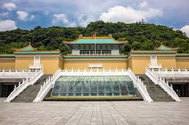

Ciang Kai Shek merupakan tokoh militer dan politik yang sangat berpengaruh di sejarah modern. Ia lahir tanggal 31 Oktober 1887 di Zhejiang. Tiongkok dan wafat 5 April 1976 di Taipei, Taiwan Sebelum pergi ke Taiwan ia merupakan salah satu petinggi partai Kuomintang(KMT) dan ia dididik militer di Jepang dan merupakan pendukung setia Sun Yat Sen dan menggantikan ia menjadi pemimpin partai KMT setelah Sun Yat Sen meninggal. Dimana ia berhasil menyatukan beberapa daerah Tiongkok dan memindahkan ibukota ke Nanjing. Beberapa waktu kemudian juga ada perang persaudaraan yang terjadi karena Ciang Kai Shek menentang sangat keras kepada partai yang baru Partai Komunis Tiongkok dan kalah
Saat pindah ke Taiwan ia membawa 3 hal
Ratusan ton emas
jutaan karya seni Tiongkok
2 juta penjabat dan orang kaya
Karena jumlahnya sangat banyak Ciang Kai Shek membolongi gunung untuk menyimpan barang-barang tersebut. Saat di Taiwan ia mendirikan pemerintahan otoriter dimana tidak boleh ada orang-orang komunis dan juga adanya reformasi agraria dan pembangunan industri yang membuat ekonomi Taiwan bagus. Setelah itu dibangunlah national palace museum yang terbuka untuk umum untuk memnunjukkan karya seni Tiongkok
>